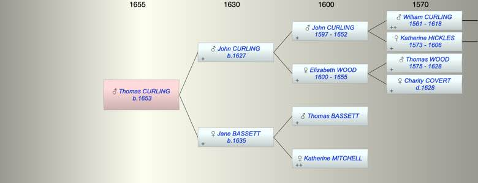

| [Index] |
| Thomas CURLING (1653 - ) |
|  |
| b. 1653 at St Laurence |
| Parents: |
| John CURLING (1627 - ) |
| Jane BASSETT (1635 - ) |
| Siblings (4): |
| Elizabeth CURLING (1655 - ) |
| Jane CURLING (1658 - ) |
| Katherine CURLING (1662 - ) |
| John CURLING (1664 - ) |
| Events in Thomas CURLING (1653 - )'s life | |||||
| Date | Age | Event | Place | Notes | Src |
| 1653 | Thomas CURLING was born | St Laurence | Note 1 | ||
| Note 1: bap St Laurence 6 Mar 1653 son of John and Jane ex FMP PR |
| Created on a Mac™ using iFamily for Mac™ on 8 Oct 2023 |